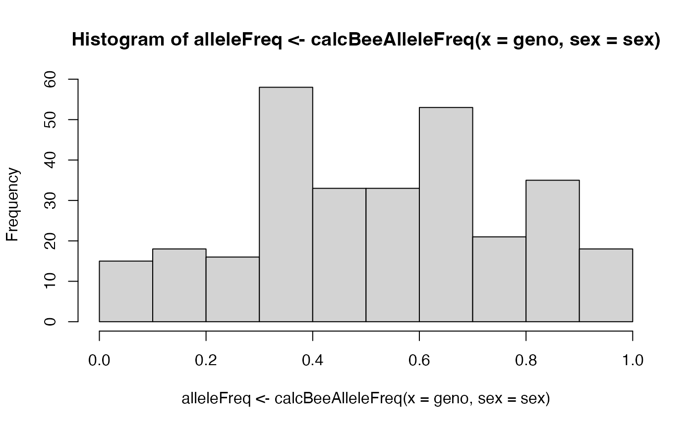

Introduction
This vignette demonstrates how SIMplyBee manages and manipulates the honey bee’s genomic information. Specifically, it describes:
- how to obtain the genomic information,
- how to pool genotypes, and
- how to compute genomic relationship matrices.
Let’s first create a colony.
library(package = "SIMplyBee")
#> Loading required package: AlphaSimR
#> Loading required package: R6
#>
#> Attaching package: 'SIMplyBee'
#> The following object is masked from 'package:base':
#>
#> split
founderGenomes <- quickHaplo(nInd = 2, nChr = 3, segSites = 100)
SP <- SimParamBee$new(founderGenomes)
SP$setTrackRec(TRUE) # request recombination tracking
baseQueens <- createVirginQueens(founderGenomes)
baseDrones <- createDrones(x = baseQueens[1], nInd = 15)
colony <- createColony(x = baseQueens[2])
colony <- cross(colony, drones = baseDrones)
colony <- buildUp(colony)Obtaining genomic information
Honeybees have a haplo-diploid inheritance system where queens and workers are diploid and drones are haploid. In SIMplyBee, we simulate drones as doubled-haploids, that is, as fully homozygous diploid individuals. This means that they have two identical sets of chromosomes. When they produce sperm, their gametes all have the same one set of chromosomes. Despite them being diploid, we generally return a haploid set of chromosomes from drones, unless specifically requested that you want the doubled-haploid genotype.
Following AlphaSimR, SIMplybee has a group of genome retrieval
functions get*Haplo/Geno() which extract haplotypes and
genotypes for all segregating sites (SegSites),
quantitative trait loci (QTL), markers (SNP),
and the identical by descent (IBD) haplotypes. Here, site,
locus and marker are all synonyms for a position in the genome. These
functions leverage AlphaSimR functionality, but work with SIMplyBee’s
Colony or MultiColony objects and in addition
take the caste argument to extract information for a
specific caste. Another argument you can use with this function is
collapse = TRUE/FALSE. If collapse = TRUE then
all of the information is collapsed together and a single matrix is
returned, if collapse = FALSE we return a list by caste or
by colony.
We recommend that you study the index of available
get*() functions in SIMplyBee and read this vignette for a
short demonstration: help(SIMplyBee).
To show all this functionality, let’s get haplotypes and genotypes
across the segregating sites for the different castes using
getSegSitesGeno() or getSegSitesHaplo(). The
first row of the output shows marker identifications (chromosome_locus)
and the first column shows haplotype identifications
(individual_haplotype). The alleles are represented with a sequence of
0’s and 1’s. Let’s first obtain the information at the segregating sites
for the queen (we limit the output to the first 10 sites):
getSegSiteHaplo(colony, caste = "queen")[, 1:10]
#> 1_1 1_2 1_3 1_4 1_5 1_6 1_7 1_8 1_9 1_10
#> 2_1 1 0 0 0 1 1 1 0 1 1
#> 2_2 1 1 0 1 0 0 0 1 1 0
getSegSiteGeno(colony, caste = "queen")[, 1:10]
#> 1_1 1_2 1_3 1_4 1_5 1_6 1_7 1_8 1_9 1_10
#> 2 1 0 1 1 1 1 1 2 1Now for the fathers:
getSegSiteHaplo(colony, caste = "fathers")[, 1:10]
#> 1_1 1_2 1_3 1_4 1_5 1_6 1_7 1_8 1_9 1_10
#> 8_1 0 0 0 1 1 1 1 0 0 1
#> 6_1 0 0 0 1 1 1 0 1 1 0
#> 3_1 0 0 0 1 1 1 1 0 0 1
#> 16_1 0 0 0 1 1 1 1 0 0 1
#> 17_1 0 0 0 1 1 1 1 0 0 1
#> 14_1 0 0 0 1 1 1 1 0 0 1
#> 15_1 1 0 1 1 0 1 0 1 1 0
#> 12_1 0 0 0 1 1 1 1 0 0 1
#> 7_1 1 0 1 1 0 1 0 1 1 0
#> 11_1 1 0 1 1 0 1 0 1 1 0
#> 9_1 0 0 0 1 1 1 1 0 0 1
#> 13_1 1 0 1 1 0 1 0 1 1 0
#> 10_1 1 0 1 1 0 1 0 1 1 0
#> 4_1 1 0 1 1 0 1 0 1 1 0
#> 5_1 0 0 0 1 1 1 1 0 0 1
getSegSiteGeno(colony, caste = "fathers")[, 1:10]
#> 1_1 1_2 1_3 1_4 1_5 1_6 1_7 1_8 1_9 1_10
#> 8 0 0 0 1 1 1 1 0 0 1
#> 17 0 0 0 1 1 1 1 0 0 1
#> 4 1 0 1 1 0 1 0 1 1 0
#> 7 1 0 1 1 0 1 0 1 1 0
#> 12 0 0 0 1 1 1 1 0 0 1
#> 13 1 0 1 1 0 1 0 1 1 0
#> 5 0 0 0 1 1 1 1 0 0 1
#> 15 1 0 1 1 0 1 0 1 1 0
#> 11 1 0 1 1 0 1 0 1 1 0
#> 9 0 0 0 1 1 1 1 0 0 1
#> 6 0 0 0 1 1 1 0 1 1 0
#> 10 1 0 1 1 0 1 0 1 1 0
#> 16 0 0 0 1 1 1 1 0 0 1
#> 3 0 0 0 1 1 1 1 0 0 1
#> 14 0 0 0 1 1 1 1 0 0 1Since father are drones, and these are haploid, we get one row per father. We can retrieve the doublet-haploid (diploid implementation) state, if this is desired (showing just one father to show this clearly):
getSegSiteHaplo(colony, caste = "fathers",
nInd = 1, dronesHaploid = FALSE)[, 1:10]
#> 1_1 1_2 1_3 1_4 1_5 1_6 1_7 1_8 1_9 1_10
#> 0 0 0 1 1 1 0 1 1 0
getSegSiteGeno(colony, caste = "fathers",
nInd = 1, dronesHaploid = FALSE)[, 1:10, drop = FALSE]
#> 1_1 1_2 1_3 1_4 1_5 1_6 1_7 1_8 1_9 1_10
#> 6 0 0 0 2 2 2 0 2 2 0Now two workers:
getSegSiteHaplo(colony, caste = "workers", nInd = 2)[, 1:10]
#> 1_1 1_2 1_3 1_4 1_5 1_6 1_7 1_8 1_9 1_10
#> 68_1 1 1 0 1 0 0 0 1 1 0
#> 68_2 0 0 0 1 1 1 1 0 0 1
#> 62_1 1 0 0 1 0 0 0 1 1 0
#> 62_2 0 0 0 1 1 1 1 0 0 1
getSegSiteGeno(colony, caste = "workers", nInd = 2)[, 1:10]
#> 1_1 1_2 1_3 1_4 1_5 1_6 1_7 1_8 1_9 1_10
#> 90 2 0 1 1 1 2 1 1 2 1
#> 36 1 1 0 2 1 1 1 1 1 1And finally four drones:
getSegSiteHaplo(colony, caste = "drones", nInd = 4)[, 1:10]
#> 1_1 1_2 1_3 1_4 1_5 1_6 1_7 1_8 1_9 1_10
#> 127_1 1 0 0 0 1 1 1 0 1 1
#> 207_1 1 1 0 1 0 0 0 1 1 0
#> 164_1 1 1 0 0 1 1 1 0 1 1
#> 176_1 1 1 0 1 0 0 0 1 1 0
getSegSiteGeno(colony, caste = "drones", nInd = 4)[, 1:10]
#> 1_1 1_2 1_3 1_4 1_5 1_6 1_7 1_8 1_9 1_10
#> 172 1 0 0 0 1 1 1 1 1 0
#> 140 1 1 0 1 0 0 0 1 1 0
#> 152 1 1 0 1 0 0 0 1 1 0
#> 125 1 0 0 1 0 0 0 1 1 0You can also use caste = "all" to get the haplotypes and
phenotypes from every individual in the colony. If the argument
collapse is set to FALSE, then the function
returns a list with haplotypes for each caste. Let’s explore the
structure of the output:
str(getSegSiteHaplo(colony, caste = "all", collapse = FALSE))
#> List of 5
#> $ queen : int [1:2, 1:300] 1 1 0 1 0 0 0 1 1 0 ...
#> ..- attr(*, "dimnames")=List of 2
#> .. ..$ : chr [1:2] "2_1" "2_2"
#> .. ..$ : chr [1:300] "1_1" "1_2" "1_3" "1_4" ...
#> $ fathers : int [1:15, 1:300] 0 0 1 1 0 0 0 0 0 0 ...
#> ..- attr(*, "dimnames")=List of 2
#> .. ..$ : chr [1:15] "3_1" "12_1" "15_1" "10_1" ...
#> .. ..$ : chr [1:300] "1_1" "1_2" "1_3" "1_4" ...
#> $ workers : int [1:200, 1:300] 1 0 1 0 1 0 1 0 1 0 ...
#> ..- attr(*, "dimnames")=List of 2
#> .. ..$ : chr [1:200] "111_1" "111_2" "56_1" "56_2" ...
#> .. ..$ : chr [1:300] "1_1" "1_2" "1_3" "1_4" ...
#> $ drones : int [1:100, 1:300] 1 1 1 1 1 1 1 1 1 1 ...
#> ..- attr(*, "dimnames")=List of 2
#> .. ..$ : chr [1:100] "141_1" "143_1" "189_1" "207_1" ...
#> .. ..$ : chr [1:300] "1_1" "1_2" "1_3" "1_4" ...
#> $ virginQueens: NULLIf the argument collapse is set to TRUE,
the function returns a single matrix with haplotypes of all the
individuals. The same behaviour is implemented for all the functions
that extract genomic information
str(getSegSiteHaplo(colony, caste = "all", collapse = TRUE))
#> int [1:317, 1:300] 1 1 0 1 1 0 1 0 0 1 ...
#> - attr(*, "dimnames")=List of 2
#> ..$ : chr [1:317] "2_1" "2_2" "12_1" "4_1" ...
#> ..$ : chr [1:300] "1_1" "1_2" "1_3" "1_4" ...
getSegSiteHaplo(colony, caste = "all", collapse = TRUE)[1:10, 1:10]
#> 1_1 1_2 1_3 1_4 1_5 1_6 1_7 1_8 1_9 1_10
#> 2_1 1 0 0 0 1 1 1 0 1 1
#> 2_2 1 1 0 1 0 0 0 1 1 0
#> 12_1 0 0 0 1 1 1 1 0 0 1
#> 5_1 0 0 0 1 1 1 1 0 0 1
#> 17_1 0 0 0 1 1 1 1 0 0 1
#> 16_1 0 0 0 1 1 1 1 0 0 1
#> 11_1 1 0 1 1 0 1 0 1 1 0
#> 4_1 1 0 1 1 0 1 0 1 1 0
#> 6_1 0 0 0 1 1 1 0 1 1 0
#> 3_1 0 0 0 1 1 1 1 0 0 1
getSegSiteGeno(colony, caste = "all", collapse = TRUE)[1:10, 1:10]
#> 1_1 1_2 1_3 1_4 1_5 1_6 1_7 1_8 1_9 1_10
#> 2 2 1 0 1 1 1 1 1 2 1
#> 3 0 0 0 1 1 1 1 0 0 1
#> 15 1 0 1 1 0 1 0 1 1 0
#> 5 0 0 0 1 1 1 1 0 0 1
#> 14 0 0 0 1 1 1 1 0 0 1
#> 12 0 0 0 1 1 1 1 0 0 1
#> 16 0 0 0 1 1 1 1 0 0 1
#> 9 0 0 0 1 1 1 1 0 0 1
#> 11 1 0 1 1 0 1 0 1 1 0
#> 4 1 0 1 1 0 1 0 1 1 0SIMplyBee also has shortcuts for these haplotype and genotype functions to make life a bit easier for the user:
getQueenSegSitesHaplo()getQueenSegSitesGeno()getFathersSegSitesHaplo()getFathersSegSitesGeno()getWorkersSegSitesHaplo()getWorkersSegSitesGeno()getDronesSegSitesHaplo()getDronesSegSitesGeno()getVirginQueensSegSitesHaplo()getVriginQueensSegSitesGeno()
Similar aliases exist also for extracting information about
quantitative trait loci (QTL), markers (SNP),
and the identical by descent (IBD) haplotypes.
Pooling genotypic information
Unfortunately, in real life it’s challenging to get the genotype of
every individual honeybee and so SIMplyBee provides the function
getPooledGeno() to imitate real life data.
getPooledGeno() returns a pooled genotype from individual
genotypes to mimic the genotyping of a pool of colony members. A
comparison of pooled and individual genotypes also allows the user to
compare the two and see the impact of pooled samples on results.
Firstly let’s obtain the genotypes of the workers and of the queen so that they’re easier to work with:
genoQ <- getSegSiteGeno(colony, caste = "queen")
genoW <- getSegSiteGeno(colony, caste = "workers")The function getPooledGeno() required also the sex of
individuals whose genotype are getting pooled (F for
females and M for males).
sexW <- getCasteSex(colony, caste = "workers")You have two options when choosing what kind of pooled genotypes you
would like, using the type = argument. You can use
type = "mean" for the average genotypes and
type = "count" for the counts of reference and alternative
alleles.
getPooledGeno(x = genoW, type = "count", sex = sexW)[, 1:10]
#> 1_1 1_2 1_3 1_4 1_5 1_6 1_7 1_8 1_9 1_10
#> 0 60 148 160 47 93 53 99 102 54 99
#> 1 140 52 40 153 107 147 101 98 146 101
(poolW <- getPooledGeno(x = genoW, type = "mean", sex = sexW))[, 1:10]
#> 1_1 1_2 1_3 1_4 1_5 1_6 1_7 1_8 1_9 1_10
#> 1.40 0.52 0.40 1.53 1.07 1.47 1.01 0.98 1.46 1.01Now lets plot and compare the pooled workers to the queen’s genotype (note the use of jitter for queen’s genotype on the x-axis so we can spread out the dots in the plot!).
plot(y = poolW, x = jitter(genoQ), ylim = c(0, 2), xlim = c(0, 2),
ylab = "Average allele dosage in workers",
xlab = "Allele dosage in the queen" )
Computing Genomic Relationship Matrices
This section introduces the calculations of IBD and IBS genomic relationship matrices, so let’s have a quick reminder of what these mean. Identity-by-state (IBS) is a term used when two alleles, two segments or sequences of the genome are identical. Identity-by-descent (IBD) is when a segment of matching (IBS) DNA shared by two or more individuals has been inherited from a common ancestor.
Using IBD and IBS can allow a user to look into the relationships
based on the genomic data. We’ll demonstrate this by calculating some
Genomic Relationship Matrices (GRM) using SIMplyBee’s
calcBeeGRMIbs() and calcBeeGRMIbd().
Let’s look at the calcBeeGRMIbs() first. This function
returns a Genomic Relatedness Matrix (GRM) for honeybees from IBS
genomic data (bi-allelic SNP represented as allele dosages) following
the method for the sex X chromosome (Druet and Legarra, 2020).
To see this, let’s obtain the genotypes and sex information of all individuals in the colony.
geno <- getSegSiteGeno(colony, collapse = TRUE)
sex <- getCasteSex(x = colony, collapse = TRUE)Now let’s calculate the IBS GRM, we will use the genotypes to calculate this:
GRM <- calcBeeGRMIbs(x = geno, sex = sex)This produces a matrix that we can plot and summarise - its useful to summarise diagonal and off-diagonal values separately.


summary(x)
#> Min. 1st Qu. Median Mean 3rd Qu. Max.
#> 0.3688 0.4333 0.5967 0.5818 0.7148 0.8786
summary(x)
#> Min. 1st Qu. Median Mean 3rd Qu. Max.
#> -0.438686 -0.119831 -0.013563 -0.002706 0.095974 0.712632We can also inspect GRM elements between specific caste members:
ids <- getCasteId(colony)
idQueen <- ids$queen
idFathers <- ids$fathers
idWorkers <- ids$workers
idDrones <- ids$drones
idVirginQueens <- ids$virginQueens
mw <- "mw"
md <- "md"
hist(GRM[idQueen, idWorkers], xlim = r)
hist(GRM[idQueen, idDrones], xlim = r)
calcBeeGRMIbs() uses the
calcBeeAlleleFreq() function to calculate allele
frequencies for centering the honeybee genotypes. You can also use it in
some other cases:
hist(alleleFreq <- calcBeeAlleleFreq(x = geno, sex = sex))
Now lets look at calcBeeGRMIbd(). This function creates
Genomic Relatedness Matrix (GRM) for honeybees based on
Identical-By-Descent (IBD) information. It returns a list with a matrix
of gametic relatedness coefficients (between genomes) and a matrix of
individual relatedness coefficients (between individuals). Please refer
to Grossman and Eisen (1989), Fernando and Grossman (1989), Fernando and
Grossman (1990), Van Arendonk, Tier, and Kinghorn (1994), and Hill and
Weir (2011) for the background on this function.
Now obtain the IBD haplotypes and compute IBD GRM.
haploQ <- getQueenIbdHaplo(colony)
haploF <- getFathersIbdHaplo(colony)
haploW <- getWorkersIbdHaplo(colony)
haploD <- getDronesIbdHaplo(colony)
haploV <- getVirginQueensIbdHaplo(colony)
haplo <- rbind(haploQ, haploF, haploW, haploD, haploV)
GRMs <- calcBeeGRMIbd(x = haplo)Let’s view this matrix:


Now we can look at the diagonal of the obtained matrices that represent 1 for a genomes and 1 + inbreeding coefficient individuals.
i <- diag(GRMs$genome)
summary(x)
#> Min. 1st Qu. Median Mean 3rd Qu. Max.
#> -0.438686 -0.119831 -0.013563 -0.002706 0.095974 0.712632
i <- diag(GRMs$indiv)
summary(i)
#> Min. 1st Qu. Median Mean 3rd Qu. Max.
#> 0.5000 0.5000 0.5000 0.7338 1.0000 1.0000And now the non-diagonals that represent the coefficients of relationship between genomes or between individuals.

summary(x)
#> Min. 1st Qu. Median Mean 3rd Qu. Max.
#> 0.0000 0.0000 0.2633 0.2730 0.5267 1.0000
i <- GRMs$indiv[lower.tri(x = GRMs$indiv, diag = FALSE)]
hist(i)
summary(i)
#> Min. 1st Qu. Median Mean 3rd Qu. Max.
#> 0.0000 0.1967 0.2750 0.2945 0.3717 0.9300Let’s now compare compare relationships between caste members within a colony.
# Obtains caste member IDs
qI <- getQueen(colony)@id
fI <- sort(getFathers(colony)@id)
wI <- sort(getWorkers(colony)@id)
dI <- sort(getDrones(colony)@id)
r <- range(GRMs$indiv)Compare queen and fathers:
hist(GRMs$indiv[fI, qI], xlim = r)
Queen and workers:
hist(GRMs$indiv[wI, qI], xlim = r)
Queen and drones:
hist(GRMs$indiv[dI, qI], xlim = r)
References
Druet and Legarra (2020) Theoretical and empirical comparisons of expected and realized relationships for the X-chromosome. Genetics Selection Evolution, 52:50. https://doi.org/10.1186/s12711-020-00570-6
Grossman and Eisen (1989) Inbreeding, coancestry, and covariance between relatives for X-chromosomal loci. The Journal of Heredity, 80(2):137–142. https://doi.org/10.1093/oxfordjournals.jhered.a110812
Fernando and Grossman (1989) Covariance between relatives for X-chromosomal loci in a population in disequilibrium. Theoretical and Applied Genetics, 77:311–319. https://doi.org/10.1007/bf00305821
Fernando and Grossman (1990) Genetic evaluation with autosomal and X-chromosomal inheritance. Theoretical and Applied Genetics, 80:75–80. https://doi.org/10.1007/bf00224018
Van Arendonk, Tier, and Kinghorn (1994) Use of multiple genetic markers in prediction of breeding values. Genetics, 137(1):319–329. https://doi.org/10.1093/genetics/137.1.319
Hill and Weir (2011) Variation in actual relationship as a consequence of Mendelian sampling and linkage. Genetics Research, 93(1):47–64. https://doi.org/10.1017/s0016672310000480